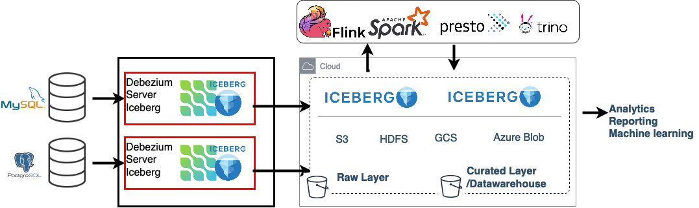

Debezium Iceberg Consumer
Directly replicate database Change Data Capture (CDC) events to Iceberg tables on cloud storage or HDFS, eliminating the need for intermediate systems like Spark, Kafka, or streaming platforms. 
iceberg Consumer
The Iceberg consumer replicates database Change Data Capture (CDC) events to target Iceberg tables. It supports both upsert and append modes for data replication.
When event and key schema information is enabled (debezium.format.value.schemas.enable=true and debezium.format.key.schemas.enable=true), the destination Iceberg tables are automatically created upon the initial startup.
Configuration properties
| Config | Default | Description |
|---|---|---|
debezium.sink.type |
iceberg |
Debezium server coniguration, must be set to iceberg activates the iceberg consumer. |
debezium.sink.iceberg.warehouse |
Root path of the Iceberg data warehouse | |
debezium.sink.iceberg.io-impl |
org.apache.iceberg.io.ResolvingFileIO |
Iceberg file io implementation. Used to write iceberg data files. |
debezium.sink.iceberg.catalog-name |
default |
User-specified Iceberg catalog name. |
debezium.sink.iceberg.table-namespace |
default |
A namespace in the catalog. ex: SELECT * FROM prod.db.table --> catalog: prod, namespace: db, table: table |
debezium.sink.iceberg.table-prefix |
`` | Prefix for Iceberg tables. A prefix added to the names of Iceberg tables. |
debezium.sink.iceberg.write.format.default |
parquet |
Default file format for Iceberg tables: parquet, avro, or orc |
debezium.sink.iceberg.allow-field-addition |
true |
Allow field addition to target tables. Enables automatic schema evolution, expansion. |
debezium.sink.iceberg.upsert |
false |
Upsert mode overwrites updated rows. Any existing rows that are updated will be overwritten with the new values. Explained further below. |
debezium.sink.iceberg.upsert-keep-deletes |
true |
When running in upsert mode, deleted rows are marked as deleted but retained in the target table (soft delete) |
debezium.sink.iceberg.upsert-dedup-column |
`` | With upsert mode this field can be used to deduplicate data. If it's set the row with the greatest value of the field is retained. |
debezium.sink.iceberg.upsert-op-field |
__op |
Field name for operation type in upsert mode. dont change! |
debezium.sink.iceberg.nested-as-variant |
false |
When true, all nested data is stored in Iceberg variant fields, allowing schema changes to be absorbed directly within these fields. |
debezium.sink.iceberg.create-identifier-fields |
true |
When set to false, the consumer will create tables without identifier fields. This is useful for scenarios where users want to consume nested events in append-only mode. |
debezium.sink.iceberg.table-mapper |
default-mapper |
Mapping strategy between source table names and their corresponding Iceberg table names. Currently, only default-mapper implementation is provided. |
debezium.sink.iceberg.destination-regexp |
`` | A regular expression used to modify the destination Iceberg table name. This setting allows for combining multiple tables, such as table_ptt1 and table_ptt2, into a single table, table_combined. |
debezium.sink.iceberg.destination-regexp-replace |
`` | Replace part of the regexp for modifying destination Iceberg table names |
debezium.sink.iceberg.destination-uppercase-table-names |
false |
Creates uppercase Iceberg table names |
debezium.sink.iceberg.destination-lowercase-table-names |
false |
Creates lowercase Iceberg table names |
debezium.sink.iceberg.preserve-required-property |
false |
When translating schema from source to Iceberg, by default, only primary key columns are defined as required; the rest of the columns become optional. When this is set to true, the columns preserve their original required/optional property. |
debezium.sink.iceberg.partition-by |
`` | Comma-separated list of partition fields to use when creating the table. |
debezium.sink.batch.batch-size-wait |
NoBatchSizeWait |
Batch size wait strategy: Controls the size of data files and the frequency of uploads. Explained below. |
debezium.sink.batch.concurrent-uploads |
1 |
The number of parallel threads to use for uploading data to Iceberg tables. When set to a value greater than 1, the consumer will write to multiple tables concurrently. |
debezium.sink.batch.concurrent-uploads.timeout-minutes |
60 |
The maximum time in minutes to wait for all parallel uploads to complete before timing out. This is only effective when debezium.sink.batch.concurrent-uploads is greater than 1. |
debezium.sink.iceberg.{iceberg.prop.name} |
Iceberg config These Iceberg settings are passed to Iceberg without the debezium.sink.iceberg. prefix. |
|
debezium.source.offset.storage |
io.debezium.server.iceberg.offset.IcebergOffsetBackingStore |
The name of the Java class that is responsible for persistence of connector offsets. see debezium doc. Set to io.debezium.server.iceberg.offset.IcebergOffsetBackingStore to use Iceberg table |
debezium.source.offset.storage.iceberg.table-name |
_debezium_offset_storage |
Destination Iceberg table name to store connector offset information. |
debezium.source.schema.history.internal |
io.debezium.server.iceberg.history.IcebergSchemaHistory |
The name of the Java class that is responsible for persistence of the database schema history. see debezium doc. Set to io.debezium.server.iceberg.history.IcebergSchemaHistory to use Iceberg table. |
debezium.source.schema.history.internal.iceberg.table-name |
_debezium_database_history_storage |
Destination Iceberg table name to store database schema history information. |
debezium.source.time.precision.mode |
isostring |
Mode for temporal precision handling in Debezium source. |
debezium.source.decimal.handling.mode |
double |
Mode for handling decimal values in the relational database connector. |
debezium.format.value |
connect |
Format of the event value. one of {json, connect}. |
debezium.format.key |
connect |
Format of the event key. one of {json, connect}. |
debezium.format.value.schemas.enable |
true |
Enable schema inclusion in the event value format. |
debezium.format.key.schemas.enable |
true |
Enable schema inclusion in the event key format. |
debezium.transforms |
unwrap |
Enables Debezium transforms for event processing. |
debezium.transforms.unwrap.type |
io.debezium.transforms.ExtractNewRecordState |
Type of the Debezium unwrap transform. |
debezium.transforms.unwrap.add.fields |
op,table,source.ts_ns,db,ts_ms |
List of fields to add in the Debezium unwrap transform. |
debezium.transforms.unwrap.delete.tombstone.handling.mode |
rewrite |
Handling mode for delete events in the Debezium unwrap transform. |
debezium.transforms.unwrap.drop.tombstones |
true |
Handling mode for tombstone events (delete markers) in the Debezium unwrap transform. |
quarkus.log.level |
INFO |
Global Quarkus logging level |
Upsert Mode
When enabled, (debezium.sink.iceberg.upsert=true) the
consumer utilizes the source table's primary key to perform upsert operations on the target Iceberg table, effectively
deleting existing rows and inserting updated ones. For tables lacking a primary key, the consumer reverts to append-only
mode.
Upsert Mode Data Deduplication
Upsert mode enables data deduplication. By default only the latest record in a batch is retained for each primary key,
since by default Debezium produces events in the order in which they were obtained from the database.
The debezium.sink.iceberg.upsert-dedup-column property can be used to specify a column for deduplication
(currently limited to Long type). If it's set the record with the greatest value of the column is retained.
When two records with the same key and value of the specified column are received,
the record with the higher priority operation type is retained and added to the destination table, while the duplicate record is discarded.
Operation type priorities are as follows: c (create) > r (read) > u (update) > d (delete).
Upsert Mode, Keeping Deleted Records
By default, debezium.sink.iceberg.upsert-keep-deletes=true retains deleted records in the Iceberg table. Setting this
property to false will remove deleted records from the destination table.
By keeping deleted records, the consumer can effectively implement soft deletes, marking records as deleted (__deleted
set to true) while preserving their last known state in the Iceberg table.
Append Mode
Default mode, when debezium.sink.iceberg.upsert=false switches the operation mode to append-only. In append-only mode, data
deduplication is not performed, and all incoming records are appended to the destination table.
It's important to note that even when upsert mode is enabled, tables without a primary key will switch to append-only behavior.
Optimizing batch size (or commit frequency)
Debezium's real-time extraction of database events can lead to frequent commits and the creation of numerous small files, which can negatively impact performance, especially when near-real-time data feeds are sufficient.
To address this, the connector offers various batch size wait strategies to optimize batch size and interval. These strategies introduce a delay between consumer calls, allowing for the accumulation of more events per call. This approach can significantly improve performance by reducing the number of commits and file operations.
To fine-tune this behavior, the debezium.source.max.queue.size and debezium.source.max.batch.size properties should
be configured in conjunction with the batch size wait strategy`. See the examples below.
NoBatchSizeWait
This is default configuration by default consumer will not use any wait. All the events are consumed immediately.
debezium.sink.batch.batch-size-wait=NoBatchSizeWait
MaxBatchSizeWait
The MaxBatchSizeWait strategy leverages Debezium metrics to optimize batch size. It periodically checks the streaming
queue size and waits until it reaches the specified debezium.source.max.batch.size or
debezium.sink.batch.batch-size-wait.max-wait-ms. The maximum wait time and check interval are controlled by the
debezium.sink.batch.batch-size-wait.max-wait-ms and debezium.sink.batch.batch-size-wait.wait-interval-ms properties,
respectively.
For instance, to process 2048 events per commit with a maximum wait time of 30 seconds and a check interval of 5 seconds, you would configure the settings as follows:
debezium.sink.batch.batch-size-wait=MaxBatchSizeWait
debezium.source.connector.class=io.debezium.connector.postgresql.PostgresConnector
debezium.source.max.batch.size=2048
debezium.source.max.queue.size=16000
debezium.sink.batch.batch-size-wait.max-wait-ms=30000
debezium.sink.batch.batch-size-wait.wait-interval-ms=5000
Iceberg Table Naming Rule
Iceberg tables follow a specific naming format: table-namespace.table-prefix``database.server.name
source_database_namesource_table_name
For example:
debezium.sink.iceberg.table-namespace=default
database.server.name=testc
debezium.sink.iceberg.table-prefix=cdc_
With the configuration described above, the database table inventory.customers will be replicated to the Iceberg
table default.testc_cdc_inventory_customers.
Table Partitioning with partition-by
The Debezium Iceberg consumer supports flexible table partitioning using the debezium.sink.iceberg.partition-by configuration.
When creating a new Iceberg table, the consumer determines the partitioning strategy as follows:
- Global Partitioning: If the property
debezium.sink.iceberg.partition-byis set, consumer uses it to partition all the tables. - Unpartitioned Tables: If the global
partition-byproperty is not set, the table will be created as unpartitioned.
If an invalid or unsupported transform is provided, table will be created as unpartitioned.
Configuration
You can specify partitioning at the global level. Examples:
The value is a comma-separated list of field names or transform expressions. Supported transforms include:
* year(field), month(field), day(field), hour(field)
* bucket(field, N), truncate(field, N)
Examples
# Identity partitioning (by field)
debezium.sink.iceberg.partition-by=category
# Partition by year and month of a timestamp field
debezium.sink.iceberg.partition-by=year(event_time),month(event_time)
# Bucket partitioning
debezium.sink.iceberg.partition-by=bucket(user_id, 16)
Debezium Offset Storage
This implementation persists CDC offset to an Iceberg table. Debezium concurrently tracks source offset to monitor binlog position.
debezium.source.offset.storage=io.debezium.server.iceberg.offset.IcebergOffsetBackingStore
debezium.source.offset.storage.iceberg.table-name=debezium_offset_storage_table
Debezium Database History Storage
Stores database change history in Iceberg table.
debezium.source.database.history=io.debezium.server.iceberg.history.IcebergSchemaHistory
debezium.source.database.history.iceberg.table-name=debezium_database_history_storage_table
Debezium Event Flattening
For an optimal experience, it is recommended to enable event flattening in the consumer configuration. For detailed information on message transformations, please refer to the Debezium documentation.
Example Event Flattening Setting:
debezium.transforms=unwrap
debezium.transforms.unwrap.type=io.debezium.transforms.ExtractNewRecordState
debezium.transforms.unwrap.add.fields=op,table,source.ts_ns,db
debezium.transforms.unwrap.add.headers=db
debezium.transforms.unwrap.delete.tombstone.handling.mode=rewrite
When event flattening is disabled, the Iceberg consumer can only operate in append-only mode. Upsert mode and the creation of identifier fields are not supported in this configuration.
Settings for Running the Consumer Without Event Flattening:
Configuring iceberg
All properties prefixed with debezium.sink.iceberg.__ICEBERG_CONFIG__ are directly passed to Iceberg and hadoopConf.
Example Configuration
See application.properties.example
Automatic Schema Change Handling
Source systems often undergo schema changes, which can involve adding new fields, removing existing ones, or modifying the structure of existing fields. This document outlines the anticipated schema changes and how the system currently handles them.
Important Note: While full schema evaluation is not currently supported, the system can accommodate schema
expansions, such as adding new fields or expanding existing field data type. To enable this behavior, set the
debezium.sink.iceberg.allow-field-addition configuration property to true.
Adding new column to source table (A column missing in destination iceberg table)
When debezium.sink.iceberg.allow-field-addition is false
New columns added to the source table are not automatically reflected in the destination Iceberg table. Data associated with these new columns will be ignored until the corresponding columns are manually added to the destination table schema.
When debezium.sink.iceberg.allow-field-addition is true
New columns are automatically added to the destination Iceberg table and populated with corresponding data. This behavior is handled automatically by the consumer.
Removing a column from the source table (An extra column in iceberg table)
After a column is removed from the source table, the corresponding column in the destination Iceberg table will continue to exist. However, new records will have null values for that column.
Renaming a column in the source table
Renaming a column in the source table is a combination of the two scenarios described above:
- Old Column: The old column will continue to exist in the destination table, but new records will have null values for that column.
- New Column: The new column will need to be added to the destination table schema, either automatically by the consumer or manually. Once added, it will be populated with the appropriate data from the source.
Handling Mismatching Data Types
The system has limited support for schema changes that involve mismatching data types. While safe data type expansions, such as converting int to long, are supported, conversions that could lead to data loss, such as converting decimal to int, are not.
When debezium.sink.iceberg.allow-field-addition is true:
In this scenario, consumer attempts to automatically adjust the data types of destination fields to accommodate changes in the source schema. However, incompatible conversions, such as converting a float to an integer, are not supported, Consumer will throw exception. Safe conversions, such as converting an int to a double, are allowed.
When debezium.sink.iceberg.allow-field-addition is false:
In this scenario, the consumer attempts to convert source field values to the target data type using Jackson. If Jackson cannot successfully perform the conversion, a default value is returned by jackson.
Jackson conversion rule for Long type:
Method that will try to convert value of this node to a Java long. Numbers are coerced using default Java rules; booleans convert to 0 (false) and 1 (true), and Strings are parsed using default Java language integer parsing rules.
If representation cannot be converted to a long (including structured types like Objects and Arrays), default value of 0 will be returned; no exceptions are thrown.
Jackson conversion rule for boolean type:
Method that will try to convert value of this node to a Java boolean. JSON booleans map naturally; integer numbers other than 0 map to true, and 0 maps to false and Strings 'true' and 'false' map to corresponding values.
If representation can not be converted to a boolean value (including structured types like Objects and Arrays), specified defaultValue will be returned; no exceptions are thrown.